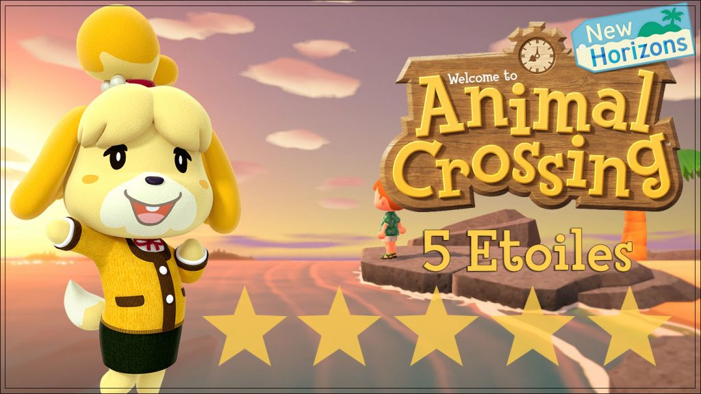

Les bâtiments prennent une part majeure dans l’aventure d’Animal Crossing : New Horizons. Depuis toujours, la licence dispose
d’emblématiques magasins.
Mais dans cet épisode sur Switch, cela prend encore plus son sens puisque vous aurez de nombreuses constructions à
faire, et surtout, vous pourrez les déplacer plus tard, pour façonner l’île de vos rêves.
Au fil du jeu et à force de vous faire (arnaquer) par Tom Nook, vous allez pouvoir agrandir votre maison, passant d’une tente à une
maison de plus en plus grande, avec plus de pièces et de possibilités de personnalisation.
Au total, vous allez dépenser 5 696 000 Clochettes et 5 000 Miles Nook pour arriver à la dernière extension de la maison.
Une fois une construction commandée, vous devrez attendre le lendemain pour l'obtenir. Cependant, vous pouvez prendre autant de temps que vous voulez pour rembourser le prêt contracté auprès de Tom Nook.
Une fois installé sur votre nouvelle île, il vous est très vite demandé de construire un musée où vous pouvez exposer
différentes espèces d'insectes et de poissons. Vous devrez également rassembler une collection de fossiles et d'oeuvres d'art.
Le conservateur est un hibou nommé Thibou. Il est présent toute la journée, mais il dormira le jour. Vous devrez donc le réveiller pour interagir
avec lui. Le musée est consituée d'un hall, où se tiendra Thibou, et de quatre pièces, chacune remplie d'une des collections du jeu.
Kéké Laglisse est un chien chanteur très célèbre dans la série Animal Crossing et il est présent dans tous les opus.
Lorsque le joueur commence la partie pour la première fois, le jeu ne se déroule pas en temps réel. Lorsque le joueur se couche, Kéké fait
une apparition en disant des propos philosophiques sur le voyage. Cette apparition sert de transition afin que le joueur puisse jouer en temps
réel.
Afin de le faire réapparaitre, le joueur doit obtenir une note de 3 étoiles pour son île. Le joueur connaît sa note en allant voir Marie
(assistante de Tom Nook), présente dans le bureau des résidents.
Lorsque les trois étoiles sont atteintes, elle citera un commentaire du célèbre chanteur : "[nom de l'île]... C'est une île au poil,
à ce qu'on dit... J'irais bien en faire un tour à l'occasion..." - K.L .
Tom Nook réalise alors que les propos sont ceux de Kéké Laglisse. Il appelle donc Kéké qui prend la décision de se produire en concert sur
l'île du joueur le lendemain.
Plus tard, Tom Nook annonce au joueur que le chanteur se produira en concert sur l'île du joueur chaque samedi. Il se produira le vendredi si un
événement comme le tournoi de pêche a lieu le samedi.
Kéké est alors présent toute la journée sur l'île afin de se produire en concert devant le bureau des résidents, entouré de chaises permettant
aux résidents de pouvoir l'écouter. Vers 18h, il proposera au joueur de choisir une chanson de son choix, ou de décrire son humeur afin qu'il joue
une musique qui lui correspond.
Comme dans les précédents opus, Kéké offrira un exemplaire de la musique qu'il vient de jouer gratuitement au joueur.
L’étape de base dans la quête de la note parfaite, c’est l’installation de nouveaux habitants. Ainsi, dès que Tom Nook vous propose d’installer des parcelles pour les futurs villageois, il ne faut pas hésiter à dépenser ses clochettes. C’est même prioritaire par rapport au remboursement de votre dette !
Évidemment, quand c’est fait, il ne faut pas simplement attendre que des gens s’intéressent à votre île ou à votre camping. N’hésitez donc pas à
aller recruter sur les îles mystères.
La critique qui reviendra le plus souvent dans Animal Crossing : New Horizons à propos de votre île sera le manque d’objets à l’extérieur.
Les villageois vous donneront parfois des meubles pour vous aider. Il ne faut pas hésiter à tout installer. Si vous pensez que c’est trop chargé
et pas assez assorti, Marie vous dira quand-même que c’est vide. Il faut donc y aller et abuser, quitte à remplacer les objets plus tard par
d’autres plus adaptés à vos goûts personnels.
Les plans de construction disponibles contre des miles dans le Nook Stop seront d’une grande aide pour améliorer la ville. En effet, les obtenir sera beaucoup moins aléatoire que les autres plans ou objets. Et surtout, cela permet de crafter (= fabriquer) vous-même vos meubles. Le fait-maison est un critère important pour la réputation. Tout comme la variété des décors donc ce n’est pas parce qu’un objet vous plait qu’il faut en poser des centaines sur l’île.
On les oublie facilement mais les clôtures rentrent aussi en compte dans la note de votre île. Puisque les villageois ne s’occupent pas de leur
propre maison, c’est à vous d’installer des barrières autour de chez eux.
Chaque jour, il est possible d’échanger des miles contre deux plans de nouveaux types de clôtures à l’habituelle borne Nook Stop. On vous
recommande donc d’acheter plusieurs plans pour varier au maximum les barrières de votre île mais aussi pourquoi pas tenter de coller au style de
chaque maison.
Dans la course aux cinq étoiles, il est facile de tout raser pour avoir le plus de place possible pour charger l’île au maximum. Mais attention, puisque le nombre de plantes et d’arbres est aussi un paramètre dans la notation. Cela ne devrait cependant pas poser problème si vous plantez un minimum de végétaux (notamment en suivant les missions Miles Nook +) et si vous replantez/déplacez chaque chose que vous arrachez/coupez.